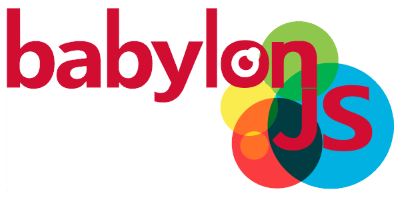

<!DOCTYPE html><html><head lang="en"><meta charset="UTF-8"><meta name="viewport" content="width=device-width, initial-scale=1"><title>BabylonJS Guide</title><link rel="shortcut icon" href="/img/favicon.ico"><link rel="stylesheet" href="https://cdnjs.cloudflare.com/ajax/libs/normalize/3.0.3/normalize.min.css"><link rel="stylesheet" href="/css/libs/slideout.css"><link rel="stylesheet" href="/css/libs/highlight/github.css"><link rel="stylesheet" href="//maxcdn.bootstrapcdn.com/font-awesome/4.3.0/css/font-awesome.min.css"><link rel="stylesheet" href="https://cdnjs.cloudflare.com/ajax/libs/jquery.perfect-scrollbar/0.6.3/css/perfect-scrollbar.min.css"><link rel="stylesheet" href="/css/main.css"></head><body><nav id="menu"></nav></body></html><nav class="nav-main"><!-- Hamburger menu : displayed only in small screens--><i id="mobilemenu" class="fa fa-bars"></i><!-- this button only shows on mobile version of a "class" page--><div class="banner"><div class="menu"><div id="home" class="do-not-hover"><a href="/">Babylon.js | GUIDE</a></div><div id="begin" class="item"><a href="/begins.html">Begin Here</a></div><div id="basic" class="item"><a href="/basics.html">Basics</a></div><div id="intermediate" class="item"><a href="/intermediate.html">Intermediate</a></div><div id="advanced" class="item"><a href="/advanced.html">Advanced</a></div></div></div></nav><div id="wrapper"><div class="presentation-header"><div class="presentation-img"></div><div class="bigimage"></div><h1 class="bjs-moto">An open source 3D engine based on webGL and Javascript</h1></div><div class="bjs-components"><div class="bjs-component"><h1>About The Guide</h1><p>This guide is for potential and existing users to have an overview of the parts that make up BabylonJS
and where necessary how to begin. It is a re-organisation of parts of the <a href ="http://doc.babylonjs.com/">Official Documentation</a>
which should be visited for fuller details including the add-ons or extensions available, 
videos, a list of all available classes and more.     </p></div><div class="bjs-component"><h1>Lights, Camera, Action</h1><p>This phrase can be applied to making 3D games as well as making movies.
Of course as well as lights and cameras for your scene you also need
locations, sets, props and actors before any action can take place.
 
BabylonJS can provide all this for you. Learn a little about BJS and 
then all you need is imagination and a knowledge of Javascript and very soon 
you can have a scene up and running. One light and a camera is all you need 
to see your scene. Start with building simple props, join them to form
a set add an actor and you're off.</p></div><div class="bjs-component"><h1>Some 3D Jargon is Needed.</h1><p>To drive your 3D game forward you will need a <i>3D engine</i>, in this case BabylonJS. 
Then everything you do is set inside a <i>scene</i> including the <i>lights</i> and <i>camera</i>. 
Props and locations are built from <i>meshes</i> which are constructions using points and lines. 
The beauty of BJS is that many many useful meshes are built very simply using one instruction. 
Meshes can be animated as well. Want an actor in your scene then build a character from <i>bones</i> 
and <i>skeletons</i>. Like to colour your meshes or wrap them in images then form a <i>material</i> 
and give it a colour or <i>texture</i> from an image and apply it to your mesh. Need natural reactions 
between objects in your scene then add in a <i>physics engine</i>. Don't want to do all the coding to
make your meshes and characters then there are 3D Creation Packages that can be used as designers and 
then as <i>exporters</i> of files that can be <i>loaded</i> in BJS. </p></div></div><!-- HIGHLIGHT JS--><script src="https://cdnjs.cloudflare.com/ajax/libs/highlight.js/8.6/highlight.min.js"></script><script src="https://cdnjs.cloudflare.com/ajax/libs/highlight.js/8.6/languages/javascript.min.js"></script><script>hljs.initHighlightingOnLoad();</script><script>var selectedLanguage = 'js';

document.getElementById('js-start').addEventListener('click', function() {
    selectedLanguage = 'js';
    
    var hiddenElements = document.getElementsByClassName('ts');
    var visibleElements = document.getElementsByClassName('js');
    
    for (var i = 0; i < hiddenElements.length; i++) {
        hiddenElements[i].style.display = 'none';
    }
    for (var i = 0; i < visibleElements.length; i++) {
        visibleElements[i].style.display = '';
    }
    
    document.getElementById('js-start').className += ' toggle-selected';
    document.getElementById('ts-start').className = document.getElementById('ts-start').className.replace(/\btoggle-selected\b/g,'');
});

document.getElementById('ts-start').addEventListener('click', function() {
    selectedLanguage = 'ts';
    
    var hiddenElements = document.getElementsByClassName('js');
    var visibleElements = document.getElementsByClassName('ts');
    
    for (var i = 0; i < hiddenElements.length; i++) {
        hiddenElements[i].style.display = 'none';
    }
    for (var i = 0; i < visibleElements.length; i++) {
        visibleElements[i].style.display = '';
    }
    
    document.getElementById('js-start').className = document.getElementById('js-start').className.replace(/\btoggle-selected\b/g,'');
    document.getElementById('ts-start').className += ' toggle-selected';
});

var hiddenElements = document.getElementsByClassName('ts');
var visibleElements = document.getElementsByClassName('js');

for (var i = 0; i < hiddenElements.length; i++) {
    hiddenElements[i].style.display = 'none';
}
for (var i = 0; i < visibleElements.length; i++) {
    visibleElements[i].style.display = '';
}

document.getElementById('js-start').className += ' toggle-selected';
document.getElementById('ts-start').className = document.getElementById('ts-start').className.replace(/\btoggle-selected\b/g,'');</script><style>.selection-toggles {
    text-align: center;
}
.selection-toggle {
    background-color: #f8eec7;
    color: #ffffff;
    font-size: 20px;
    padding: 10px 20px 10px 20px;
    text-decoration: none;
    border: none;
}
.toggle-selected {
    background-color: #fc4349;
}
</style></div><footer class="footer"><div class="footer-item"><a href="http://www.html5gamedevs.com/forum/16-babylonjs" target="_blank"><i class="fa fa-html5"></i>    Forum</a></div><div class="footer-item"><a href="https://github.com/BabylonJS/Babylon.js" target="_blank"><i class="fa fa-github"></i>    Github</a></div><div class="footer-item"><a href="https://github.com/BabylonJS/Documentation" target="_blank"><i class="fa fa-code-fork"></i>    Contribute</a></div><div class="footer-item"><a href="http://doc.babylonjs.com/" target="_blank"><i class="fa fa-html5"></i>    Official Documentation        </a></div></footer><script src="https://code.jquery.com/jquery-2.1.4.min.js"></script><script src="https://cdnjs.cloudflare.com/ajax/libs/slideout/0.1.9/slideout.min.js"></script><script src="/js/index.js"></script><script>(function (i, s, o, g, r, a, m) {
    i['GoogleAnalyticsObject'] = r;
    i[r] = i[r] || function () {
                (i[r].q = i[r].q || []).push(arguments)
            };
    i[r].l = 1 * new Date();
    a = s.createElement(o);
    m = s.getElementsByTagName(o)[0];
    a.async = 1;
    a.src = g;
    m.parentNode.insertBefore(a, m)
})(window, document, 'script', '//www.google-analytics.com/analytics.js', 'ga');
ga('create', 'UA-66146410-1', 'auto');
ga('send', 'pageview');</script>